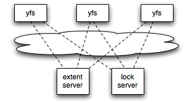

1、介绍
1、Yield another File System用作2012年MIT 6.824 Distributed Systems 的课程实践,按照论文Frangipani: A Scalable Distributed File System的思路实现一个分布式的文件系统. 该课程结合相关论文和实验，能够让我们充分体验到分布式系统的神奇之处。尤其提供的实验，更能够让我们切身体会到设计分布式系统的乐趣，对理解分布式系统，有很大的帮助。文件系统的基本结构如下:

yfs: 文件系统客户端(相对extent server),提供文件操作API.
extent server: 文件存储服务
lock server: 锁服务,保证文件系统并发访问时的申请/释放锁正确
2、主要实现的模块和功能:
a.锁服务
b.文件系统服务
c.锁缓存和文件缓存,一致性
d.利用Paxos算法和Replicated State Machine方法备份锁服务
3、课程附带实验一共7个:
Lab 1 - Lock Server -> 实现锁服务
Lab 2 - Basic File Server -> 基本文件系统服务
Lab 3 - MKDIR, UNLINK, and Locking ->
Lab 4 - Caching Lock Server -> 锁缓存服务
Lab 5 - Caching Extent Server + Consistency -> 文件缓存服务和一致性
Lab 6 - Paxos -> Paxos算法的实现
Lab 7 - Replicated lock server -> 备份锁服务